LiberNovo Omni - эргономичное офисное кресло
- Спинка Bionic FlexFit: максимальный комфорт и естественная поддержка позвоночника.
- Динамическая поддержка: кресло мгновенно адаптируется к вашим движениям — от подголовника до подлокотников, обеспечивая постоянную поддержку.
- OmniStretch: Откиньтесь назад и расслабьтесь — функция растяжки позвоночника поможет снять накопившееся напряжение.
- Произвольный угол наклона от 105° to 160°: 4 положения спинки кресел Omni позволяют подобрать удобную посадку для работы, игр или отдыха.
- Оптимальное положение относительно экрана: подголовник и спинка наклоняются под разными углами, помогая сохранять направление взгляда при изменении положения тела. Подлокотники с ходом до 100 мм также подстраиваются под ваши движения, обеспечивая удобную поддержку во время работы, игр и отдыха.
- Встроенный аккумулятор: ёмкости 2200 мАч хватает до 30 дней при ежедневном использовании или до года при минимальном количестве регулировок.


*4 угла наклона cпинка модели Omni
(105°, 120°, 135°, 160°)


Cпинка Bionic FlexFit
Максимальный комфорт благодаря спинке Bionic FlexFit
Спинка состоит из 8 гибких панелей и 14 попарных соединений, благодаря чему образуется динамичная поддерживающая поверхность. Двухслойные сферические крепления и 16 шарниров обеспечивают оптимальное сочетание гибкости и устойчивости. Спинка адаптируется к особенностям позвоночника, сохраняя его естественное положение и обеспечивая упругую поддержку.

Система динамической поддержки
Кресло LiberNovo адаптируется к вашим движениям в реальном времени — от подголовника до подлокотников, обеспечивая комфорт и стабильную поддержку в любом положении. Дифференциальный механизм наклона помогает сохранять естественное положение относительно экрана, а подлокотники с возможностью сдвига назад на 100 мм обеспечивают удобную эргономичную поддержку во время работы, игр и отдыха.
Растяжка позвоночника с электроприводом — расслабьтесь и восстановите силы
Откиньтесь назад, расслабьтесь и восстановите силы благодаря встроенной функции растяжки позвоночника.
Мягкая растяжка позвоночника помогает снять напряжение после долгого сидения, расслабить мышцы и восстановить силы всего за 5 минут.
Снижает усталость ног: эргономичный наклон на 10° способствует комфортному положению ног и улучшению кровообращения — идеально для долгой работы за столом.

Тщательно спроектировано для повышения комфорта
От подголовника до сиденья каждая регулировка была тщательно продумана для повышения вашего комфорта.
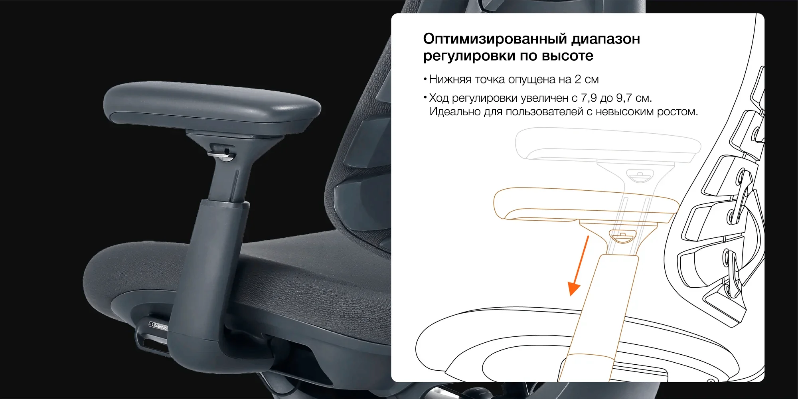


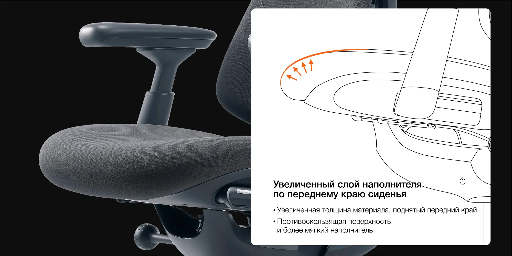
Премиальные материалы и искусное изготовление
Создано для надёжного, дышащего и долговечного комфорта.
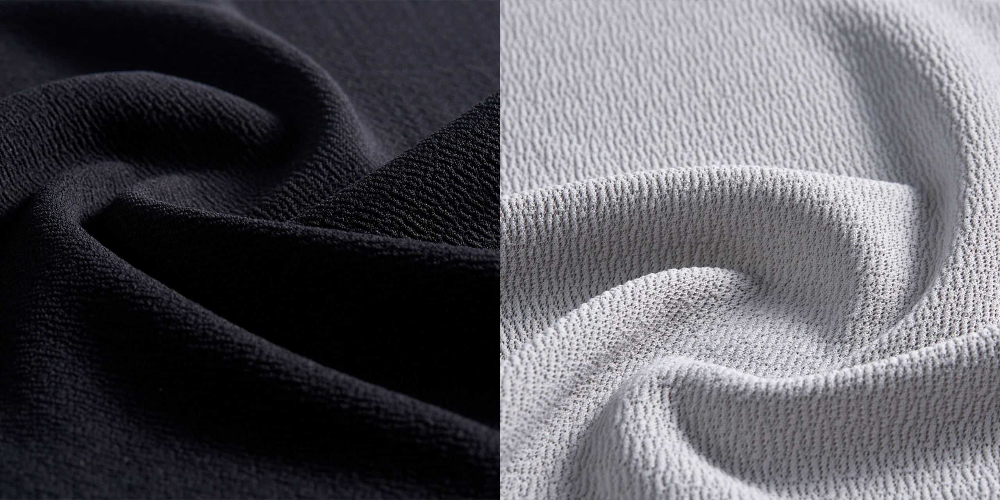
Высококачественная экологичная ткань

Микроэластичная ткань
Износостойкость: >50 000 циклов истирания

Устойчивость к образованию катышков: класс 4 (5 000 циклов)

Устойчивость окраски к трению: класс 4 (сухое трение), класс 3-4 (влажное трение)
Премиальные материалы для совершенного комфорта
Оснащённое дышащим подголовником, адаптивной спинкой и подушкой сиденья с зонами, кресло Omni гарантирует постоянный комфорт и поддержку.
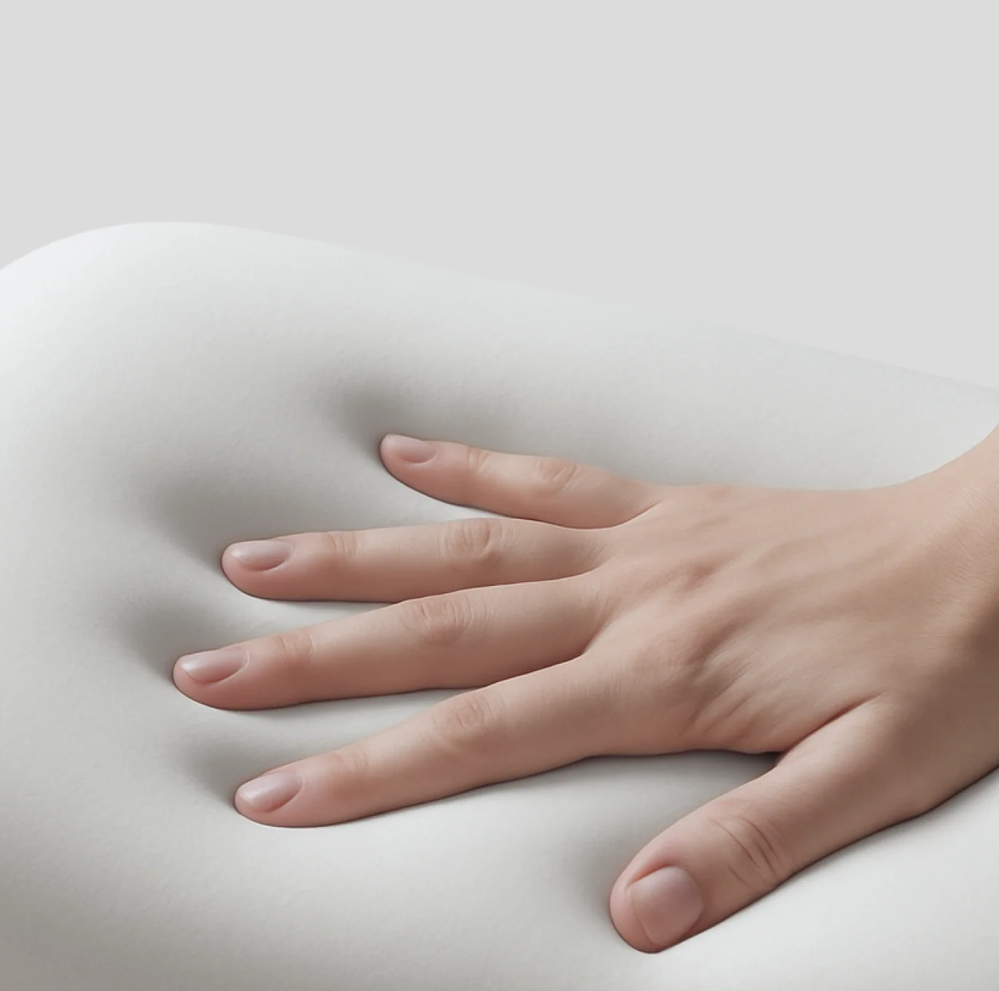
Дышащий материал и мягкая поддержка шеи
Гидрофильный наполнитель в сочетании с пеной с эффектом памяти, впервые применённые в кресле, обеспечивает поддержку шеи с усилием до 5 кг и мягко облегает её. Дышащая структура материала поддерживает комфорт как во время работы, так и во время отдыха.

Трёхслойная конструкция и глубокая поддержка
Приятный для кожи эластичный слой, мягкий слой для равномерного распределения давления и 8 упругих панелей аэрокосмического класса работают как единая система, адаптируясь к изгибам спины и обеспечивая мягкую, глубокую поддержку.
Зональная поддержка, комфорт в течение всего дня
Сиденье с наполнителем переменной плотности сочетает более жёсткую заднюю часть для надёжной поддержки таза и мягкую переднюю часть, которая снижает давление на ноги и способствует улучшению кровообращения, обеспечивая комфорт даже при длительном сидении.

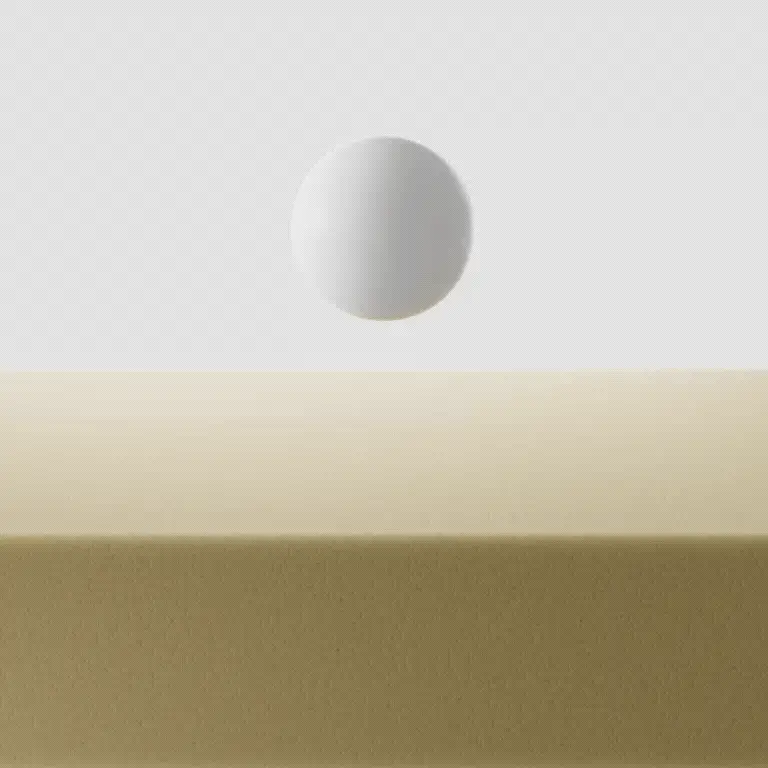
МЯГКАЯ зона (спереди)
Снижает давление на бёдра, обеспечивая мягкую поддержку и комфорт даже при длительном сидении.

СРЕДНЯЯ зона
Мягко облегает тело, равномерно распределяя нагрузку и адаптируясь к его естественным изгибам.
")
ЖЁСТКАЯ ЗОНА (сзади)
Обеспечивает надёжную поддержку тела, помогая сохранять устойчивую позу и естественное положение позвоночника.
Отзывы реальных покупателей кресла Omni


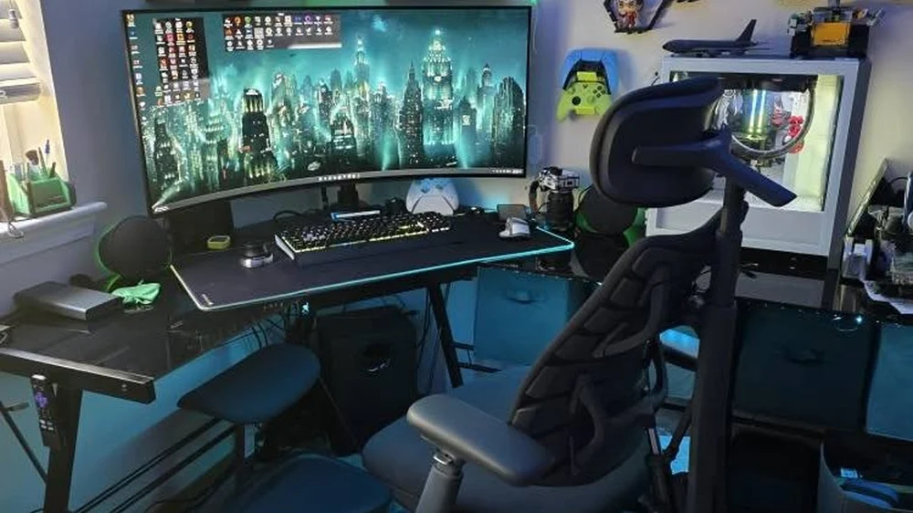
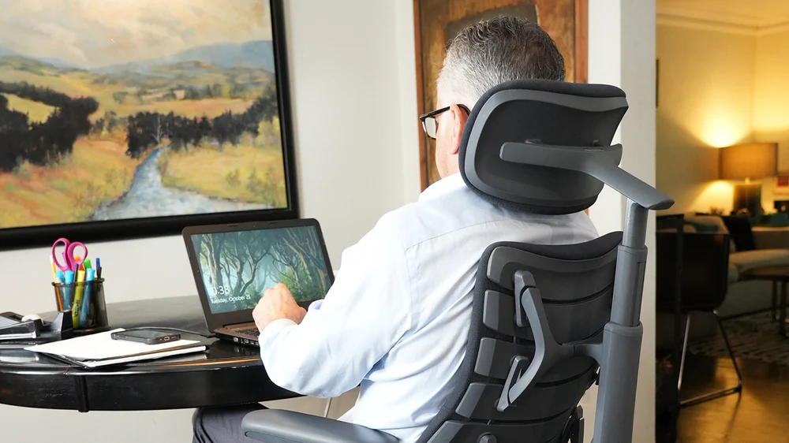
Подбор идеальной глубины сиденья
Измерьте глубину сиденья и выберите идеальную модель кресла для оптимальной поддержки и эргономичного комфорта.
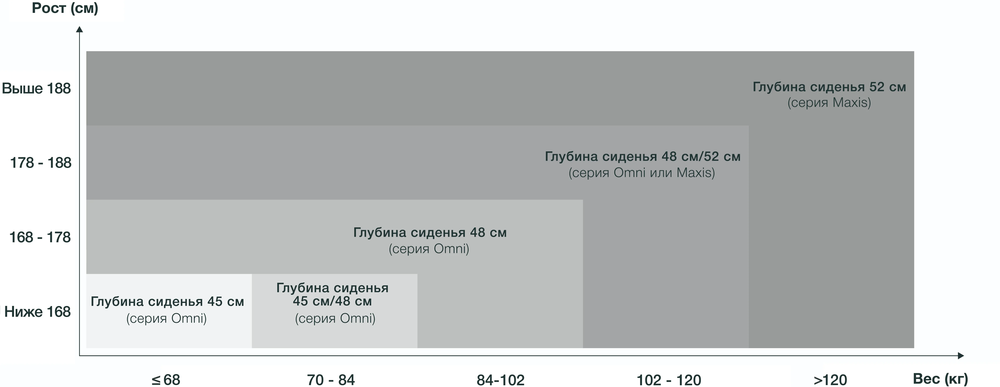
Технические характеристики
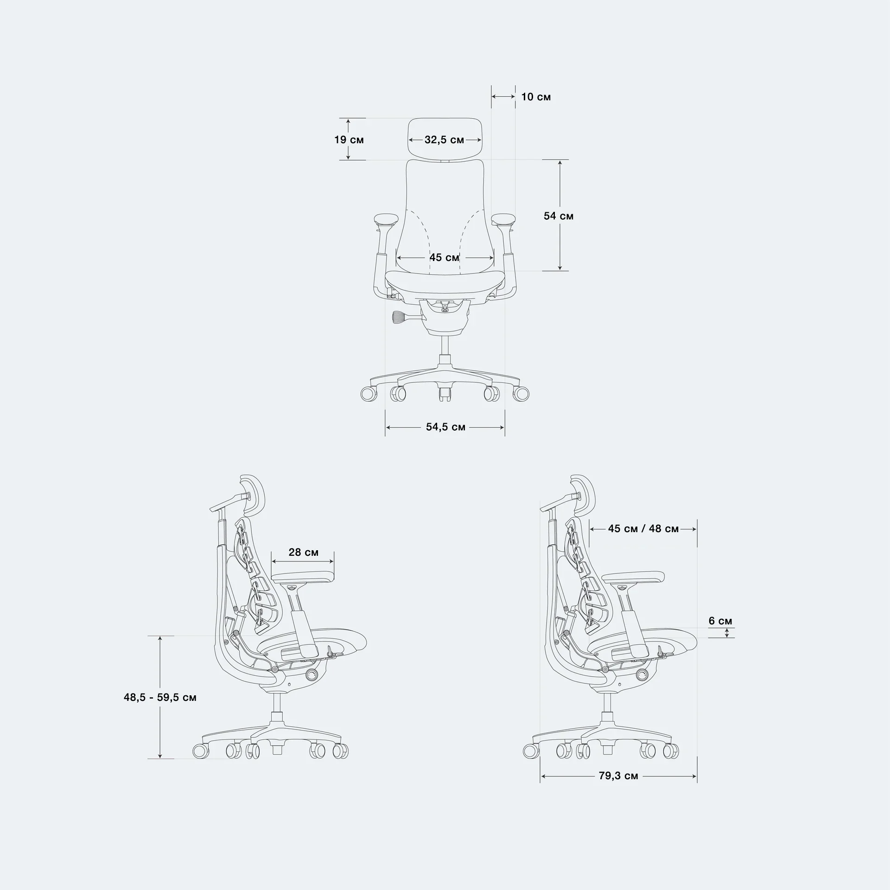
Вес: до 136 кг (BIFMA), 110 кг (EN1335)
- Верхний слой: микроэластичная ткань
- Средний слой: эластичный пеноматериал, снижающий давление
- Нижний слой: упругий материал, применяемый в авиационных креслах
Прочная и надёжная конструкция
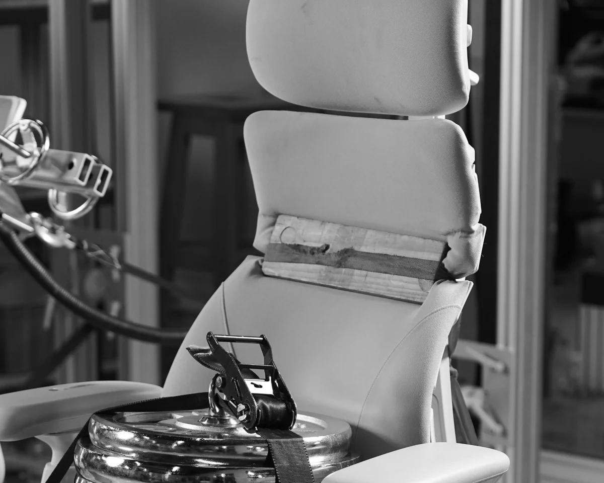
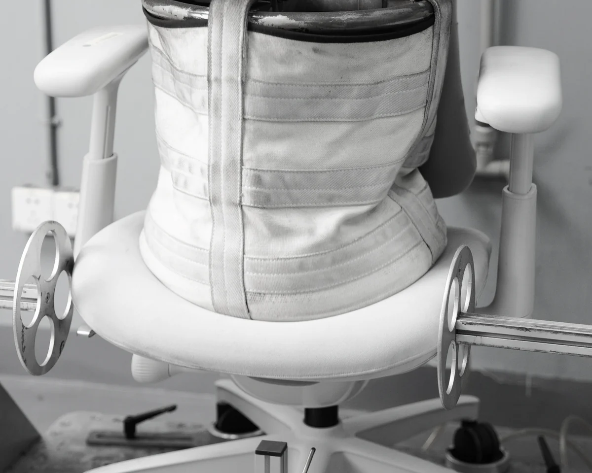
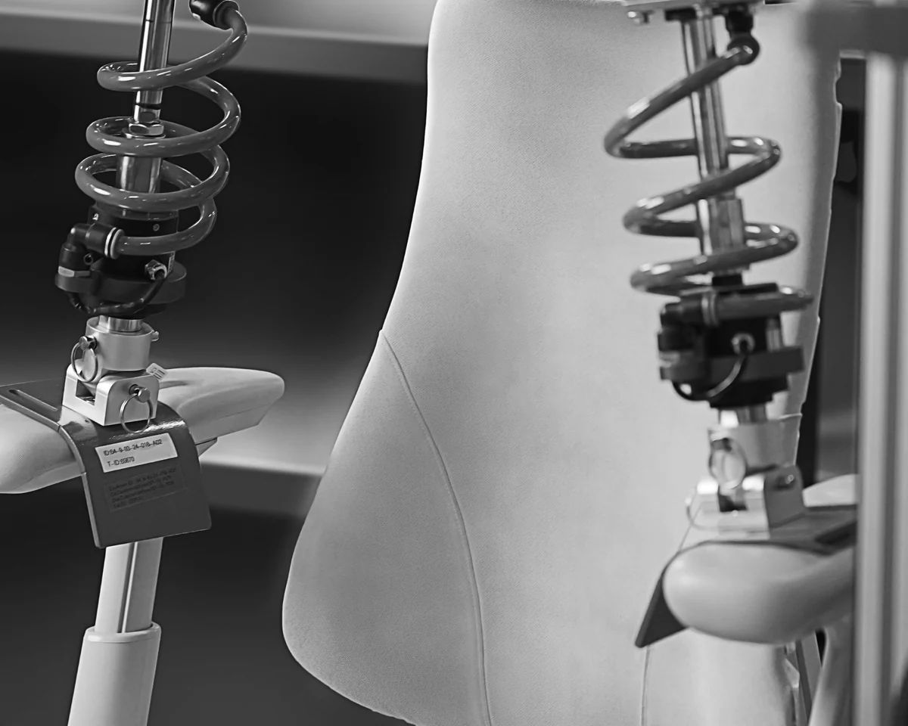
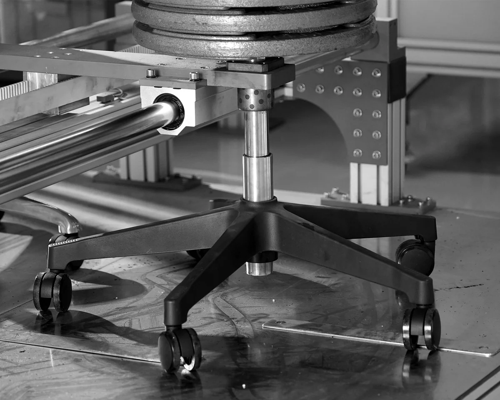
ВЕС
СПИНКИ
ПАДЕНИЯ
Комплект поставки
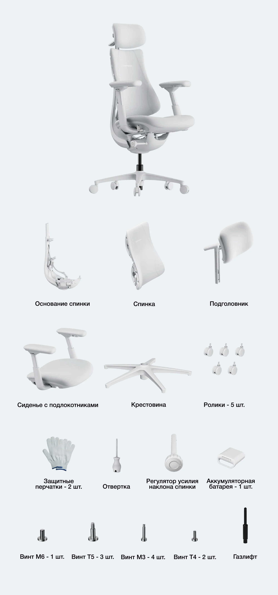